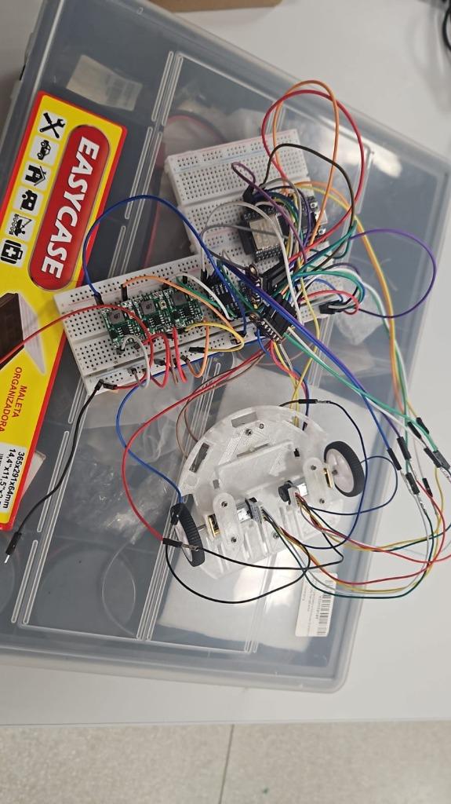

Ensaio Integrado em Protoboard: Energia, Hardware, Firmware e Telemetria (ESP32 DevKit V1)¶
Este documento registra o ensaio de integração geral em bancada (protoboard), contemplando a energização simultânea de todos os subsistemas do Micromouse, a validação das saídas dos três conversores Buck com multímetro, o acionamento do driver de motores e dos micromotores N20, a leitura dos sensores no barramento I²C com o firmware do projeto e a transmissão de telemetria via Wi-Fi diretamente da ESP32 DevKit V1 para as Edge Functions do banco de dados Supabase.
| Item | Valor |
|---|---|
| Subsistemas Integrados | Energia (LiPo 2S + 3× Buck MP1584EN), Hardware (ESP32 DevKit V1, DRV8833, 2× Motores N20 c/ Encoder, 3× VL53L0X, IMU MPU6050) e Software/Firmware (Sensores, Controle e Telemetria Wi-Fi/Supabase) |
| Data da Execução | 29/10/2026 |
| Responsáveis / Executores | Elias Oliveira e Cláudio Henrique |
| Ambiente de Montagem | Duas protoboards interligadas ao chassi impresso em 3D com motores e rodas (operação equivalente ao robô completo em bancada) |
| Resultado Global | Aprovado com pendência. Circuito integralmente energizado e estável; tensões dos 3 reguladores aferidas; driver DRV8833 e sensores I²C operacionais; motor esquerdo acionado pelo firmware, mas o motor direito não girou e os dois motores não rodaram ao mesmo tempo (pendência registrada na #483); conexão Wi-Fi e envio de lotes de telemetria às Edge Functions do Supabase (HTTP 201 e HTTP 200) validados com persistência confirmada no banco |
1. Edições e Adaptações Realizadas na Montagem de Bancada¶
Para viabilizar a validação funcional completa de ponta a ponta antes da montagem na placa de circuito impresso (PCB) definitiva, foram adotadas as seguintes edições e simplificações de hardware em relação ao esquemático teórico da Rev 2.0:
- Montagem sem Resistores e Capacitores Discretos Externos:
- Todo o circuito foi montado e testado sem a utilização de resistores e capacitores discretos avulsos na protoboard.
- Supressão do divisor resistivo e filtro do ADC (
R1 = 100 kΩ,R2 = 33 kΩeC5 = 100 nF): o circuito de monitoramento analógico da tensão da bateria no pinoGPIO 34(BAT_ADC) não foi populado nesta montagem em protoboard. - Habilitação direta do driver
DRV8833(semR4 = 47 kΩ): o pinonSLEEP(EEP/STBY) do módulo DRV8833 foi conectado diretamente ao barramento regulado de+3,3 V(+3V3_SENS), garantindo nível lógico alto estável para operação da ponte H. - Operação sem capacitores eletrolíticos/cerâmicos externos (
C2,C3,C4,C6,C7,C8): a filtragem de entrada e saída operou exclusivamente com os capacitores cerâmicos SMD (MLCC) e resistores de pull-up já integrados de fábrica nos próprios módulos comerciais (breakouts dos conversoresMP1584EN, dos sensoresVL53L0X, daMPU6050e doDRV8833), além dos resistores internos de pull-up (INPUT_PULLUP) da própria ESP32. - Emprego da Placa
ESP32 DevKit V1: - Utilizou-se o módulo ESP32 DevKit V1 (ESP32 clássico, ambiente
bancada_geral_devkitdo PlatformIO, com a flag-DPLACA_ESP32_DEVKIT), permitindo alimentar o microcontrolador pelo pinoVIN(5,0 Vvindos do BuckU2) e dedicar 17 pinos de I/O sem conflito entre a interface serial USB, o barramento I²C, os sinaisXSHUT, o PWM dos motores e os canais de quadratura dos encoders. - Configuração Funcional Equivalente ao Robô ("Rato em Protoboard"):
- Os componentes eletrônicos (três conversores Buck, ESP32 DevKit V1, driver DRV8833, IMU MPU6050 e os três sensores VL53L0X) foram dispostos em duas protoboards acopladas por chicotes diretamente ao chassi mecânico impresso em 3D contendo os dois micromotores DC N20 e rodas, reproduzindo fielmente o comportamento elétrico e lógico do Micromouse completo.

2. Plano de Ligação Utilizado (Mapeamento Pino a Pino)¶
Abaixo estão as tabelas de fiação pino a pino utilizadas como referência para a montagem, segmentadas individualmente por componente.
Nota sobre os componentes passivos na bancada
Conforme descrito na Seção 1, durante a execução prática deste ensaio não foram instalados os resistores (R1, R2) nem os capacitores externos (C5 e capacitor de bulk na saída de U4). A Tabela 3 é mantida abaixo como registro integral do plano de pinagem do ESP32 DevKit V1, destacando-se a omissão física dos passivos discretos na protoboard.
2.1. Entrada de Bateria, Proteção (F1) e Chave Geral (SW1)¶
| Componente de Origem | Terminal / Pino (Origem) | Componente de Destino | Terminal / Pino (Destino) | Nível de Tensão | Descrição / Função |
|---|---|---|---|---|---|
| Bateria LiPo 2S | Fio Vermelho (+) |
Fusível PPTC F1 (MF-R185) |
Terminal 1 |
\(7{,}4\text{ V a }8{,}4\text{ V}\) | Entrada primária da bateria |
Fusível PPTC F1 |
Terminal 2 |
Chave Geral SW1 |
Pino 1 (Entrada) |
\(7{,}4\text{ V a }8{,}4\text{ V}\) | Linha protegida contra sobrecorrente |
Chave Geral SW1 |
Pino 2 (Saída) |
Barramento VBAT |
Trilha / Linha VBAT |
\(7{,}4\text{ V a }8{,}4\text{ V}\) | Alimenta U2, U4, U5 (e \(R_1\) no plano completo) |
| Bateria LiPo 2S | Fio Preto (-) |
Barramento GND |
Trilha / Linha GND Comum |
\(0{,}0\text{ V}\) | Terra de referência unificado de todo o robô |
2.2. Conversores Step-Down Buck (U2, U5 e U4: MP1584EN)¶
Regra de Bancada Aplicada: Foram conectados primeiro os pinos
IN+eIN-, ajustado o trimpot de cada módulo com o multímetro na saída e só depois conectados os pinosOUT+ao restante do circuito.
| Componente de Origem | Terminal / Pino (Origem) | Componente de Destino | Terminal / Pino (Destino) | Nível de Tensão | Descrição / Função |
|---|---|---|---|---|---|
Buck U2 (5,0 V) |
IN+ |
Chave Geral SW1 |
Pino 2 (Barramento VBAT) |
\(7{,}4\text{ V a }8{,}4\text{ V}\) | Entrada de alta tensão do conversor 5 V |
Buck U2 (5,0 V) |
IN- |
Barramento GND |
GND Comum |
\(0{,}0\text{ V}\) | Terra de entrada do conversor 5 V |
Buck U2 (5,0 V) |
OUT+ |
ESP32 DevKit V1 | Pino VIN (ou 5V) |
\(+5{,}0\text{ V}\) | Alimentação exclusiva do ESP32 |
Buck U2 (5,0 V) |
OUT- |
ESP32 DevKit V1 | Pino GND |
\(0{,}0\text{ V}\) | Retorno de terra para o ESP32 |
Buck U5 (3,3 V) |
IN+ |
Chave Geral SW1 |
Pino 2 (Barramento VBAT) |
\(7{,}4\text{ V a }8{,}4\text{ V}\) | Entrada de alta tensão do conversor 3,3 V |
Buck U5 (3,3 V) |
IN- |
Barramento GND |
GND Comum |
\(0{,}0\text{ V}\) | Terra de entrada do conversor 3,3 V |
Buck U5 (3,3 V) |
OUT+ |
Barramento +3V3_SENS |
VIN (3× ToF, MPU), VCC (Encoders) e nSLEEP (DRV8833) |
\(+3{,}3\text{ V}\) | Alimentação lógica externa regulada |
Buck U5 (3,3 V) |
OUT- |
Barramento GND |
GND Comum |
\(0{,}0\text{ V}\) | Retorno de terra dos sensores e lógica |
Buck U4 (6,0 V) |
IN+ |
Chave Geral SW1 |
Pino 2 (Barramento VBAT) |
\(7{,}4\text{ V a }8{,}4\text{ V}\) | Entrada de alta tensão do conversor 6 V |
Buck U4 (6,0 V) |
IN- |
Barramento GND |
GND Comum |
\(0{,}0\text{ V}\) | Terra de entrada do conversor 6 V |
Buck U4 (6,0 V) |
OUT+ |
Driver DRV8833 | Pino VM |
\(+6{,}0\text{ V}\) | Alimentação de potência dos motores DC |
Buck U4 (6,0 V) |
OUT- |
Driver DRV8833 | Pino GND (Potência) |
\(0{,}0\text{ V}\) | Retorno de potência dos motores DC |
2.3. Circuito Divisor de Tensão (R1, R2 e C5, omitidos no ensaio) e Botão (BTN_START)¶
| Componente de Origem | Terminal / Pino (Origem) | Componente de Destino | Terminal / Pino (Destino) | Nível de Tensão | Descrição / Função |
|---|---|---|---|---|---|
Resistor R1 (\(100\text{ k}\Omega\)) (omitido) |
Terminal 1 |
Chave Geral SW1 |
Pino 2 (Barramento VBAT) |
\(7{,}4\text{ V a }8{,}4\text{ V}\) | Coleta tensão da bateria pós-chave (não montado na protoboard) |
Resistor R1 (\(100\text{ k}\Omega\)) (omitido) |
Terminal 2 |
ESP32 DevKit V1 | Pino GPIO 34 (Nó BAT_ADC) |
\(1{,}83\text{ V a }2{,}08\text{ V}\) | Entrega sinal atenuado ao ADC1 (não montado na protoboard) |
Resistor R2 (\(33\text{ k}\Omega\)) (omitido) |
Terminal 1 |
ESP32 DevKit V1 | Pino GPIO 34 (Nó BAT_ADC) |
\(1{,}83\text{ V a }2{,}08\text{ V}\) | Junta-se ao Terminal 2 de R1 (não montado na protoboard) |
Resistor R2 (\(33\text{ k}\Omega\)) (omitido) |
Terminal 2 |
Barramento GND |
GND Comum |
\(0{,}0\text{ V}\) | Fecha o divisor resistivo para o terra (não montado na protoboard) |
Capacitor C5 (\(100\text{ nF}\)) (omitido) |
Terminal 1 |
ESP32 DevKit V1 | Pino GPIO 34 (Nó BAT_ADC) |
\(1{,}83\text{ V a }2{,}08\text{ V}\) | Em paralelo com R2, filtro passa-baixas (não montado na protoboard) |
Capacitor C5 (\(100\text{ nF}\)) (omitido) |
Terminal 2 |
Barramento GND |
GND Comum |
\(0{,}0\text{ V}\) | Desvia ruído de alta frequência para o terra (não montado na protoboard) |
Botão BTN_START |
Terminal 1 |
ESP32 DevKit V1 | Pino GPIO 23 |
\(3{,}3\text{ V}\) (Pull-up) | Aciona partida/calibração ao ir para 0 V |
Botão BTN_START |
Terminal 2 |
Barramento GND |
GND Comum |
\(0{,}0\text{ V}\) | Aterra o pino GPIO 23 quando pressionado |
2.4. Sensores Laser ToF VL53L0X (J3 Esquerdo, J4 Frontal, J5 Direito)¶
2.4.1. VL53L0X Esquerdo (J3, endereço final 0x30)¶
| Componente de Origem | Terminal / Pino (Origem) | Componente de Destino | Terminal / Pino (Destino) | Nível de Tensão | Descrição / Função |
|---|---|---|---|---|---|
VL53L0X Esquerdo (J3) |
VIN (ou VCC) |
Buck U5 (3,3 V) |
OUT+ (Barramento +3V3_SENS) |
\(+3{,}3\text{ V}\) | Alimentação do módulo esquerdo |
VL53L0X Esquerdo (J3) |
GND |
Barramento GND |
GND Comum |
\(0{,}0\text{ V}\) | Referência elétrica |
VL53L0X Esquerdo (J3) |
SDA |
ESP32 DevKit V1 | Pino GPIO 21 |
\(3{,}3\text{ V}\) (I²C) | Via de dados I²C (em paralelo com os demais) |
VL53L0X Esquerdo (J3) |
SCL |
ESP32 DevKit V1 | Pino GPIO 22 |
\(3{,}3\text{ V}\) (I²C) | Via de clock I²C (em paralelo com os demais) |
VL53L0X Esquerdo (J3) |
XSHUT |
ESP32 DevKit V1 | Pino GPIO 16 |
\(0\text{ V} / 3{,}3\text{ V}\) | Pino exclusivo para acordar e mudar endereço |
VL53L0X Esquerdo (J3) |
GPIO1 |
Não conectado | Em aberto (Isolado) | — | Interrupção não utilizada |
2.4.2. VL53L0X Frontal (J4, endereço final 0x31)¶
| Componente de Origem | Terminal / Pino (Origem) | Componente de Destino | Terminal / Pino (Destino) | Nível de Tensão | Descrição / Função |
|---|---|---|---|---|---|
VL53L0X Frontal (J4) |
VIN (ou VCC) |
Buck U5 (3,3 V) |
OUT+ (Barramento +3V3_SENS) |
\(+3{,}3\text{ V}\) | Alimentação do módulo frontal |
VL53L0X Frontal (J4) |
GND |
Barramento GND |
GND Comum |
\(0{,}0\text{ V}\) | Referência elétrica |
VL53L0X Frontal (J4) |
SDA |
ESP32 DevKit V1 | Pino GPIO 21 |
\(3{,}3\text{ V}\) (I²C) | Via de dados I²C (em paralelo com os demais) |
VL53L0X Frontal (J4) |
SCL |
ESP32 DevKit V1 | Pino GPIO 22 |
\(3{,}3\text{ V}\) (I²C) | Via de clock I²C (em paralelo com os demais) |
VL53L0X Frontal (J4) |
XSHUT |
ESP32 DevKit V1 | Pino GPIO 17 |
\(0\text{ V} / 3{,}3\text{ V}\) | Pino exclusivo para acordar e mudar endereço |
VL53L0X Frontal (J4) |
GPIO1 |
Não conectado | Em aberto (Isolado) | — | Interrupção não utilizada |
2.4.3. VL53L0X Direito (J5, endereço final 0x32)¶
| Componente de Origem | Terminal / Pino (Origem) | Componente de Destino | Terminal / Pino (Destino) | Nível de Tensão | Descrição / Função |
|---|---|---|---|---|---|
VL53L0X Direito (J5) |
VIN (ou VCC) |
Buck U5 (3,3 V) |
OUT+ (Barramento +3V3_SENS) |
\(+3{,}3\text{ V}\) | Alimentação do módulo direito |
VL53L0X Direito (J5) |
GND |
Barramento GND |
GND Comum |
\(0{,}0\text{ V}\) | Referência elétrica |
VL53L0X Direito (J5) |
SDA |
ESP32 DevKit V1 | Pino GPIO 21 |
\(3{,}3\text{ V}\) (I²C) | Via de dados I²C (em paralelo com os demais) |
VL53L0X Direito (J5) |
SCL |
ESP32 DevKit V1 | Pino GPIO 22 |
\(3{,}3\text{ V}\) (I²C) | Via de clock I²C (em paralelo com os demais) |
VL53L0X Direito (J5) |
XSHUT |
ESP32 DevKit V1 | Pino GPIO 4 |
\(0\text{ V} / 3{,}3\text{ V}\) | Pino exclusivo para acordar e mudar endereço |
VL53L0X Direito (J5) |
GPIO1 |
Não conectado | Em aberto (Isolado) | — | Interrupção não utilizada |
2.5. Unidade de Medição Inercial (IMU MPU6050 / GY-521)¶
| Componente de Origem | Terminal / Pino (Origem) | Componente de Destino | Terminal / Pino (Destino) | Nível de Tensão | Descrição / Função |
|---|---|---|---|---|---|
IMU MPU6050 |
VCC |
Buck U5 (3,3 V) |
OUT+ (Barramento +3V3_SENS) |
\(+3{,}3\text{ V}\) | Alimentação do módulo giroscópio/acelerômetro |
IMU MPU6050 |
GND |
Barramento GND |
GND Comum |
\(0{,}0\text{ V}\) | Referência elétrica |
IMU MPU6050 |
SCL |
ESP32 DevKit V1 | Pino GPIO 22 |
\(3{,}3\text{ V}\) (I²C) | Via de clock I²C |
IMU MPU6050 |
SDA |
ESP32 DevKit V1 | Pino GPIO 21 |
\(3{,}3\text{ V}\) (I²C) | Via de dados I²C |
IMU MPU6050 |
XDA e XCL |
Não conectados | Em aberto (Isolado) | — | Barramento I²C auxiliar não utilizado |
IMU MPU6050 |
AD0 |
Barramento GND |
GND Comum |
\(0{,}0\text{ V}\) | Trava o endereço I²C em 0x68 |
IMU MPU6050 |
INT |
Não conectado | Em aberto (Isolado) | — | Leitura feita via I²C direto |
2.6. Driver de Ponte H Dupla (DRV8833)¶
| Componente de Origem | Terminal / Pino (Origem) | Componente de Destino | Terminal / Pino (Destino) | Nível de Tensão | Descrição / Função |
|---|---|---|---|---|---|
Driver DRV8833 |
VM (ou VCC) |
Buck U4 (6,0 V) |
OUT+ (sem cap. externo no ensaio) |
\(+6{,}0\text{ V}\) | Alimentação da ponte H dos motores |
Driver DRV8833 |
GND |
Barramento GND |
GND Comum |
\(0{,}0\text{ V}\) | Terra de potência e lógica do driver |
Driver DRV8833 |
nSLEEP (ou EEP/STBY) |
Buck U5 (3,3 V) |
OUT+ (Barramento +3V3_SENS) |
\(+3{,}3\text{ V}\) | Obrigatório: habilita o funcionamento do chip (ligação direta, sem resistor) |
Driver DRV8833 |
IN1 (ou AIN1) |
ESP32 DevKit V1 | Pino GPIO 25 |
\(0\text{ V a }3{,}3\text{ V}\) (PWM) | Entrada de controle Motor Esquerdo (A) |
Driver DRV8833 |
IN2 (ou AIN2) |
ESP32 DevKit V1 | Pino GPIO 26 |
\(0\text{ V a }3{,}3\text{ V}\) (PWM) | Entrada de controle Motor Esquerdo (B) |
Driver DRV8833 |
IN3 (ou BIN1) |
ESP32 DevKit V1 | Pino GPIO 27 |
\(0\text{ V a }3{,}3\text{ V}\) (PWM) | Entrada de controle Motor Direito (A) |
Driver DRV8833 |
IN4 (ou BIN2) |
ESP32 DevKit V1 | Pino GPIO 14 |
\(0\text{ V a }3{,}3\text{ V}\) (PWM) | Entrada de controle Motor Direito (B) |
Driver DRV8833 |
OUT1 (ou AOUT1) |
Motor N20 Esquerdo | Pino 1, fio vermelho (M+) |
\(0\text{ V a }6{,}0\text{ V}\) (PWM) | Saída de potência positiva Motor Esquerdo |
Driver DRV8833 |
OUT2 (ou AOUT2) |
Motor N20 Esquerdo | Pino 6, fio branco (M-) |
\(0\text{ V a }6{,}0\text{ V}\) (PWM) | Saída de potência negativa Motor Esquerdo |
Driver DRV8833 |
OUT3 (ou BOUT1) |
Motor N20 Direito | Pino 1, fio vermelho (M+) |
\(0\text{ V a }6{,}0\text{ V}\) (PWM) | Saída de potência positiva Motor Direito |
Driver DRV8833 |
OUT4 (ou BOUT2) |
Motor N20 Direito | Pino 6, fio branco (M-) |
\(0\text{ V a }6{,}0\text{ V}\) (PWM) | Saída de potência negativa Motor Direito |
Driver DRV8833 |
nFAULT (ou ULT) |
Não conectado | Em aberto (Isolado) | — | Saída de alarme de sobrecorrente (opcional) |
2.7. Motores DC N20 com Encoder Hall (Esquerdo e Direito)¶
2.7.1. Motor N20 Esquerdo (Conector de 6 Vias)¶
| Componente de Origem | Terminal / Pino (Origem) | Componente de Destino | Terminal / Pino (Destino) | Nível de Tensão | Descrição / Função |
|---|---|---|---|---|---|
| Motor N20 Esquerdo | Pino 1: M+ (Vermelho) |
Driver DRV8833 |
Pino OUT1 |
\(0\text{ V a }6{,}0\text{ V}\) (PWM) | Bobina do motor (Polo \(+\)) |
| Motor N20 Esquerdo | Pino 2: GND (Preto) |
Barramento GND |
GND Comum |
\(0{,}0\text{ V}\) | Terra exclusivo do sensor Hall |
| Motor N20 Esquerdo | Pino 3: C1 (Amarelo) |
ESP32 DevKit V1 | Pino GPIO 32 |
\(0\text{ V} / 3{,}3\text{ V}\) | Pulso de quadratura, canal A Esquerdo |
| Motor N20 Esquerdo | Pino 4: C2 (Verde) |
ESP32 DevKit V1 | Pino GPIO 33 |
\(0\text{ V} / 3{,}3\text{ V}\) | Pulso de quadratura, canal B Esquerdo |
| Motor N20 Esquerdo | Pino 5: VCC (Azul) |
Buck U5 (3,3 V) |
OUT+ (Barramento +3V3_SENS) |
\(+3{,}3\text{ V}\) | Alimentação lógica do sensor Hall |
| Motor N20 Esquerdo | Pino 6: M- (Branco) |
Driver DRV8833 |
Pino OUT2 |
\(0\text{ V a }6{,}0\text{ V}\) (PWM) | Bobina do motor (Polo \(-\)) |
2.7.2. Motor N20 Direito (Conector de 6 Vias)¶
| Componente de Origem | Terminal / Pino (Origem) | Componente de Destino | Terminal / Pino (Destino) | Nível de Tensão | Descrição / Função |
|---|---|---|---|---|---|
| Motor N20 Direito | Pino 1: M+ (Vermelho) |
Driver DRV8833 |
Pino OUT3 |
\(0\text{ V a }6{,}0\text{ V}\) (PWM) | Bobina do motor (Polo \(+\)) |
| Motor N20 Direito | Pino 2: GND (Preto) |
Barramento GND |
GND Comum |
\(0{,}0\text{ V}\) | Terra exclusivo do sensor Hall |
| Motor N20 Direito | Pino 3: C1 (Amarelo) |
ESP32 DevKit V1 | Pino GPIO 18 |
\(0\text{ V} / 3{,}3\text{ V}\) | Pulso de quadratura, canal A Direito |
| Motor N20 Direito | Pino 4: C2 (Verde) |
ESP32 DevKit V1 | Pino GPIO 19 |
\(0\text{ V} / 3{,}3\text{ V}\) | Pulso de quadratura, canal B Direito |
| Motor N20 Direito | Pino 5: VCC (Azul) |
Buck U5 (3,3 V) |
OUT+ (Barramento +3V3_SENS) |
\(+3{,}3\text{ V}\) | Alimentação lógica do sensor Hall |
| Motor N20 Direito | Pino 6: M- (Branco) |
Driver DRV8833 |
Pino OUT4 |
\(0\text{ V a }6{,}0\text{ V}\) (PWM) | Bobina do motor (Polo \(-\)) |
2.8. Microcontrolador (ESP32 DevKit V1: conferência final de todos os pinos)¶
| Componente de Origem | Terminal / Pino (Origem) | Componente de Destino | Terminal / Pino (Destino) | Nível de Tensão | Descrição / Função |
|---|---|---|---|---|---|
| ESP32 DevKit V1 | Pino VIN (ou 5V) |
Buck U2 (5,0 V) |
Pino OUT+ |
\(+5{,}0\text{ V}\) | Entrada de alimentação regulada |
| ESP32 DevKit V1 | Pino GND |
Barramento GND |
GND Comum (e OUT- de U2) |
\(0{,}0\text{ V}\) | Referência elétrica geral |
| ESP32 DevKit V1 | Pino GPIO 4 |
VL53L0X Direito (J5) |
Pino XSHUT |
\(0\text{ V} / 3{,}3\text{ V}\) | Habilitação do ToF Direito |
| ESP32 DevKit V1 | Pino GPIO 14 |
Driver DRV8833 |
Pino IN4 (ou BIN2) |
\(0\text{ V a }3{,}3\text{ V}\) (PWM) | Comando Motor Direito (Ré/Freio) |
| ESP32 DevKit V1 | Pino GPIO 16 (RX2) |
VL53L0X Esquerdo (J3) |
Pino XSHUT |
\(0\text{ V} / 3{,}3\text{ V}\) | Habilitação do ToF Esquerdo |
| ESP32 DevKit V1 | Pino GPIO 17 (TX2) |
VL53L0X Frontal (J4) |
Pino XSHUT |
\(0\text{ V} / 3{,}3\text{ V}\) | Habilitação do ToF Frontal |
| ESP32 DevKit V1 | Pino GPIO 18 |
Motor N20 Direito | Pino 3, fio amarelo (C1) |
\(0\text{ V} / 3{,}3\text{ V}\) | Interrupção Encoder Direito (Canal A) |
| ESP32 DevKit V1 | Pino GPIO 19 |
Motor N20 Direito | Pino 4, fio verde (C2) |
\(0\text{ V} / 3{,}3\text{ V}\) | Quadratura Encoder Direito (canal B) |
| ESP32 DevKit V1 | Pino GPIO 21 |
3× VL53L0X e MPU6050 |
Pinos SDA (dos 4 módulos) |
\(3{,}3\text{ V}\) (I²C) | Barramento de Dados I²C |
| ESP32 DevKit V1 | Pino GPIO 22 |
3× VL53L0X e MPU6050 |
Pinos SCL (dos 4 módulos) |
\(3{,}3\text{ V}\) (I²C) | Barramento de Clock I²C |
| ESP32 DevKit V1 | Pino GPIO 23 |
Botão BTN_START |
Terminal 1 |
\(3{,}3\text{ V} \rightarrow 0\text{ V}\) | Botão de largada (INPUT_PULLUP) |
| ESP32 DevKit V1 | Pino GPIO 25 |
Driver DRV8833 |
Pino IN1 (ou AIN1) |
\(0\text{ V a }3{,}3\text{ V}\) (PWM) | Comando Motor Esquerdo (Frente) |
| ESP32 DevKit V1 | Pino GPIO 26 |
Driver DRV8833 |
Pino IN2 (ou AIN2) |
\(0\text{ V a }3{,}3\text{ V}\) (PWM) | Comando Motor Esquerdo (Ré/Freio) |
| ESP32 DevKit V1 | Pino GPIO 27 |
Driver DRV8833 |
Pino IN3 (ou BIN1) |
\(0\text{ V a }3{,}3\text{ V}\) (PWM) | Comando Motor Direito (Frente) |
| ESP32 DevKit V1 | Pino GPIO 32 |
Motor N20 Esquerdo | Pino 3, fio amarelo (C1) |
\(0\text{ V} / 3{,}3\text{ V}\) | Interrupção Encoder Esquerdo (Canal A) |
| ESP32 DevKit V1 | Pino GPIO 33 |
Motor N20 Esquerdo | Pino 4, fio verde (C2) |
\(0\text{ V} / 3{,}3\text{ V}\) | Quadratura Encoder Esquerdo (canal B) |
| ESP32 DevKit V1 | Pino GPIO 34 |
Divisor (R1, R2, C5) |
Junção central (BAT_ADC_TEST) |
\(1{,}83\text{ V a }2{,}08\text{ V}\) | Leitura analógica da tensão da bateria (divisor não montado neste ensaio) |
3. Procedimento de Verificação de Ligações e Saídas com Multímetro¶
Para garantir a integridade dos módulos antes e durante a energização completa do circuito na protoboard, todas as ligações e saídas foram inspecionadas com multímetro digital seguindo três etapas sistemáticas:
3.1. Inspeção a Frio (Escala de Continuidade / Bip Sonoro e Resistência \(\Omega\))¶
Com a bateria LiPo 2S desconectada:
- Unificação do Terra (
GND Comum): Com a ponta de prova preta fixa no barramento principal deGND, tocou-se a ponta vermelha nos pinosIN-eOUT-dos três conversoresMP1584EN(U2,U4,U5), no pinoGNDdaESP32 DevKit V1, noGNDdoDRV8833, nos pinosGNDdos 3 sensoresVL53L0X, nos pinosGNDeAD0daMPU6050e no fio preto (Pino 2) dos dois encoders N20, confirmando continuidade plena (\(\approx 0{,}0\ \Omega\text{ a }0{,}2\ \Omega\)). - Ausência de Curto-Circuito entre Barramentos: Mediu-se a impedância entre
VBATeGND,+6V0eGND,+5V0eGND, e+3V3_SENSeGND, bem como entre barramentos adjacentes (+6V0vs.+3V3_SENS), verificando ausência de curto-circuito antes de energizar. - Conferência Ponto a Ponto de Sinais: Verificou-se a continuidade entre os terminais metálicos dos módulos (
SDA,SCL,XSHUT,IN1..IN4,OUT1..OUT4,C1/C2) e os respectivos pinos daESP32 DevKit V1e doDRV8833para descartar mau contato nos barramentos das duas protoboards.
3.2. Calibração Prévia e Aferição dos 3 Reguladores Buck (Escala de Tensão Contínua, 20 V DC)¶
Aplicando a Regra de Bancada:
- Com as saídas
OUT+dos três conversores desconectadas das cargas (em aberto), conectou-se apenas a entrada primária (VBATemIN+eGND ComumemIN-). - Com a ponta preta do multímetro no
GND Comume a ponta vermelha no pinoOUT+de cada conversorMP1584EN, ajustou-se o trimpot multivoltas e aferiu-se a tensão regulada: - Regulador
U2(ESP32 DevKit V1): ajustado e aferido em \(5{,}00\text{ V} \pm 0{,}02\text{ V}\). - Regulador
U5(Sensores I²C, Encoders enSLEEP): ajustado e aferido em \(3{,}30\text{ V} \pm 0{,}02\text{ V}\). - Regulador
U4(Potência dos Motores /DRV8833): ajustado e aferido em \(6{,}00\text{ V} \pm 0{,}02\text{ V}\).
3.3. Aferição com o Circuito Totalmente Energizado (Sob Carga)¶
Após interligar os pinos OUT+ às cargas da protoboard e energizar todo o sistema:
Ponto de Medição com Multímetro (Ponta Vermelha vs. GND) |
Tensão Esperada | Resultado Aferido em Bancada | Status |
|---|---|---|---|
Barramento de Entrada (VBAT nos pinos IN+ de U2, U4, U5) |
\(7{,}4\text{ V a }8{,}4\text{ V}\) | Tensão da bateria LiPo 2S presente e estável nos 3 conversores | Aprovado |
Saída do Regulador U2 (OUT+ \(\rightarrow\) pino VIN da ESP32 DevKit V1) |
\(+5{,}00\text{ V} \pm 2\%\) | \(\approx 5{,}0\text{ V}\) estáveis com ESP32 e rádio Wi-Fi em operação | Aprovado |
Saída do Regulador U5 (OUT+ \(\rightarrow\) +3V3_SENS) |
\(+3{,}30\text{ V} \pm 2\%\) | \(\approx 3{,}3\text{ V}\) estáveis alimentando 3× VL53L0X, MPU6050, encoders e nSLEEP |
Aprovado |
Saída do Regulador U4 (OUT+ \(\rightarrow\) pino VM do DRV8833) |
\(+6{,}00\text{ V} \pm 2\%\) | \(\approx 6{,}0\text{ V}\) estáveis no estágio de potência da ponte H | Aprovado |
Pino nSLEEP (EEP) do Driver DRV8833 |
\(+3{,}3\text{ V}\) (Habilitado) | \(3{,}3\text{ V}\) contínuos (driver ativo e fora de sleep) | Aprovado |
Barramento I²C (GPIO 21 SDA e GPIO 22 SCL em repouso) |
\(\approx +3{,}3\text{ V}\) | Nível alto em repouso mantido pelos pull-ups internos dos módulos sensores | Aprovado |
| Saídas da Ponte H sob comando PWM | \(0\text{ V a }6{,}0\text{ V}\) | OUT1/OUT2 (motor esquerdo): excursão de tensão proporcional ao duty cycle comandado e inversão de polaridade na ré. OUT3/OUT4 (motor direito): motor sem girar, em análise na #483 |
Parcial |
4. Resultados dos Testes Funcionais Integrados¶
4.1. Operação do Driver DRV8833, Motores N20 e Firmware na ESP32 DevKit V1¶
Com todo o circuito energizado na protoboard e o chassi posicionado sobre a caixa organizadora na bancada (Figura 1), foi gravado o firmware de bancada integrada na ESP32 DevKit V1:
- Inicialização e Autoteste I²C: a ESP32 executou a sequência de reset individual pelos pinos
XSHUT(GPIO 16para o sensor esquerdo0x30,GPIO 17para o frontal0x31eGPIO 4para o direito0x32) e reconheceu os sensores ToF juntamente com a IMUMPU6050(0x68) no barramento I²C (GPIO 21/GPIO 22). - Acionamento do Driver
DRV8833e Motores N20: os sinais PWM nos pinosGPIO 25/26(motor esquerdo) eGPIO 27/14(motor direito) acionaram corretamente as duas pontes H doDRV8833alimentadas pelos \(6{,}0\text{ V}\) do reguladorU4, movimentando o motor esquerdo nos sentidos de avanço, recuo e parada, sem reinicialização (brownout) do microcontrolador, mesmo sem os capacitores eletrolíticos externos na protoboard. - Pendência nos motores: nesta bancada o motor direito não girou e os dois motores não rodaram ao mesmo tempo. A causa ainda não foi identificada e é investigada na issue #483 (fiação de
IN3/IN4, tensão doVMsob carga e zona morta do N20). O restante do ensaio (reguladores, sensores e telemetria) não depende dessa correção.
4.2. Teste Dinâmico dos Sensores de Distância (VL53L0X) no Firmware¶
No primeiro vídeo do ensaio, validou-se a leitura contínua em tempo real dos sensores de proximidade VL53L0X executando o firmware desenvolvido na própria ESP32 DevKit V1:
- No monitor serial do VS Code / PlatformIO, o firmware imprime continuamente o quadro de telemetria local dos sensores:
- Ao aproximar e afastar a mão diante dos sensores montados na protoboard, as leituras de distância (
frenteedireita) respondem instantaneamente (variando defora de alcancepara174 mm,121 mm,76 mm,53 mme retornando afora de alcancequando desobstruídos), enquanto o sensor apontado para um obstáculo estacionário na bancada (esquerda) mantém leitura estável em torno de372 mm a 379 mm.
Vídeo 1. Teste dinâmico dos sensores de distância ToF VL53L0X na protoboard: a aproximação da mão altera em tempo real as leituras exibidas pelo firmware da ESP32 no terminal serial. Arquivo: docs/videos/integracao-protoboard-sensores.mp4.
4.3. Teste de Comunicação Wi-Fi e Envio de Telemetria para as Edge Functions do Supabase¶
No segundo vídeo do ensaio, validou-se o fluxo completo de comunicação sem fio da ESP32 DevKit V1 utilizando o adaptador Wi-Fi interno (2,4 GHz) e o cliente HTTPS (EnvioHttpSupabase) autenticando e enviando pacotes JSON para as Edge Functions (corridas e telemetria) do projeto no Supabase:
- Comando executado no terminal (versão inicial do firmware de telemetria, hoje incorporada à bancada geral):
Para repetir o teste com a bancada geral, grave o ambiente
bancada_geral_devkit, teclew(telemetria) e depoisa(fluxo completo). As mensagens[OK]abaixo são as mesmas. - Conexão ao Ponto de Acesso Wi-Fi (
Teste_Esp): - A ESP32 conectou-se à rede Wi-Fi
Teste_Esp, recebendo o endereço IP10.155.121.234com nível de sinal RSSI de-43 dBm. - Criação de Corrida na Edge Function (
POST /functions/v1/corridas): - O firmware disparou a chamada HTTPS autenticada com
apikey,Authorization: Bearerex-device-token, obtendo: - Envio de Lotes de Telemetria (
POST /functions/v1/telemetria): - Foram disparados três lotes consecutivos de 5 amostras cada para a
corrida_id = 11:- 1º Lote (sequências 1 a 5):
[OK] enviar lote: HTTP 200 em 813 ms, gravadas 5, ja existentes 0 - 2º Lote (sequências 6 a 10):
[OK] enviar lote: HTTP 200 em 752 ms, gravadas 5, ja existentes 0 - 3º Lote (sequências 11 a 15):
[OK] enviar lote: HTTP 200 em 752 ms, gravadas 5, ja existentes 0
- 1º Lote (sequências 1 a 5):
- Verificação Direta no Banco de Dados Supabase (
public.telemetria): - No vídeo, ao atualizar o painel Table Editor do Supabase em produção (
public.telemetria), o total de registros da tabela passa imediatamente de 18 records (até oid 42,numero_sequencia = 10) para 23 records (exibindo as novas linhasid 43aid 47, vinculadas àcorrida_id = 11comnumero_sequenciade11a15), comprovando a persistência ponta a ponta a partir da ESP32.
Vídeo 2. Teste de envio de telemetria pela ESP32 via Wi-Fi para as Edge Functions do Supabase (POST /functions/v1/corridas \(\rightarrow\) HTTP 201, corrida_id = 11; POST /functions/v1/telemetria \(\rightarrow\) HTTP 200, 3 lotes de 5 amostras) e confirmação imediata das linhas inseridas na tabela public.telemetria do Supabase. Arquivo: docs/videos/integracao-protoboard-telemetria-supabase.mp4.
5. Resumo da Avaliação e Conclusão¶
| Item Avaliado | Critério Esperado | Resultado Obtido | Situação |
|---|---|---|---|
Energização Geral e 3 Reguladores Buck (U2, U4, U5) |
Saídas estáveis em \(5{,}0\text{ V}\), \(6{,}0\text{ V}\) e \(3{,}3\text{ V}\) aferidas com multímetro | Os três conversores MP1584EN mantiveram as tensões nominais com todo o circuito energizado na protoboard | Aprovado |
| Operação sem Resistores e Capacitores Externos | Funcionamento lógico e de potência em bancada sem R1, R2, R4 e C2..C8 |
Circuito operou de forma estável apoiado nos passivos internos dos módulos e no nSLEEP ligado em \(+3{,}3\text{ V}\) |
Aprovado |
Operação da ESP32 DevKit V1 e Sensores I²C |
Inicialização via XSHUT e leitura contínua dos VL53L0X e MPU6050 |
Leituras de distância responsivas em tempo real no terminal serial (Vídeo 1) | Aprovado |
Operação do Driver DRV8833 e Motores N20 |
Acionamento de ambos os motores do chassi via comandos PWM da ESP32 | Driver habilitado em \(+3{,}3\text{ V}\) e alimentado em \(+6{,}0\text{ V}\); motor esquerdo respondeu aos comandos do firmware, motor direito não girou e os dois não rodaram juntos (#483) | Parcial |
| Comunicação Wi-Fi e Telemetria no Supabase | Conexão Wi-Fi, criação de corrida e ingestão de lotes via Edge Functions | HTTP 201 em /functions/v1/corridas (corrida_id 11) e HTTP 200 em /functions/v1/telemetria (15 amostras persistidas em public.telemetria, Vídeo 2) |
Aprovado |
5.1. Limitações do ensaio¶
- Leitura da bateria: o divisor resistivo (
R1,R2eC5) não foi montado, então a leitura analógica da tensão da bateria (GPIO 34) não foi testada neste ensaio. - Encoders: o ensaio não registra a contagem de pulsos nem o sentido dos encoders. Esse teste fica na integração dos encoders ao firmware (#475) e na bancada dos motores (#483).
- Amostras da telemetria: os lotes enviados ao Supabase são amostras de teste geradas pela bancada, e não dados de uma corrida real do robô. A telemetria de uma corrida completa é validada nas issues #232 e #237.
- Passivos omitidos: o resultado vale para a montagem sem os resistores e capacitores discretos externos. A montagem na PCB definitiva (com
R1,R2,R4eC2aC8) repete as aferições da Seção 3.
Histórico de Versões¶
| Versão | Data | Descrição | Autor(es) | Revisor(es) |
|---|---|---|---|---|
| 1.0 | 03/11/2026 | Criação do documento de ensaio integrado em protoboard (sem resistores e capacitores externos): plano de ligação completo para a ESP32 DevKit V1, procedimento de aferição com multímetro, validação dos 3 reguladores Buck, driver DRV8833, motores N20, sensores ToF e telemetria Wi-Fi/Supabase com foto e vídeos | Elias Oliveira e Cláudio Henrique | Equipe de Energia, Hardware e Software |